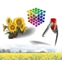
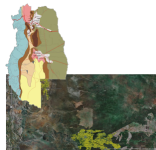

Business Intelligence para
Logística
|
El objetivo principal de
esta línea es aplicar tecnologías de Business Intelligence
(Inteligencia de Negocios) tales como Data Warehousing o Data Mining,
para soportar los procesos de toma de decisiones en los dominios de la
Logística y la Administración de la Supply Chain
(SCM).
|
Logística
y Trazabilidad de Biocombustibles
|
| El Programa
de Bioenergía de la UNCuyo es un
programa de 4 años de duración, llevado adelante
por la Facultad de Ingeniería, la Facultad de Ciencias
Aplicadas a la Industria, |
|  |
la Facultad de Agronomía y el INTA
(Instituto Nacional de Tecnología Agropecuaria), y
patrocinado por YPF (más información aquí).
El objetivo es adquirir conocimiento sobre biocombustibles
mediante proyectos de investigación enfocados en cultivos energéticos,
procesos de producción, calidad y, finalmente, logística y trazabilidad.
|
|
La Logística y Trazabilidad
tienen un rol fundamental dada la necesidad de producir y administrar
estos nuevos recursos energéticos de manera sustentable y rentable. Los
temas de investigación incluyen: identificación de actores y
composición de la cadena de abastecimientos de biocombustibles, el
diseño de un sistema de información para la trazabilidad de
biocombustibles, la aplicación de Business Intelligenc para la
identificación de los aspectos de mayor impacto
sobre la calidad y el rendimiento del producto final, y la
determinación del impacto socioeconómico de la introducción de la
industria de los biocombustibles en nuevas regiones.
|
|
Aprendizaje automático de modelos de impacto socio-económico en agroindustrias
|
La
generación de nuevos agro-negocios generalmente produce la introducción
de nuevas industrias en diferentes regiones. Esta situación genera
necesidad de mano de obra primaria y secundaria para satisfacer las
demands de las nuevas industrias, la cual puede no estar totalmente
disponible en la región debido a la falta de gente calificada.
En
este escenario, generalmente ocurre que la región crece económicamente,
produciendo cambios en el uso de la tierra, el empleo y la competencia.
Debido a las concecuencias |
 |
|
 |
producidas por este crecimiento, la predicción de estos cambios en factores demográficos y económicos
en tales regiones es de gran importancia, especialmente considerando
que usualmente la tierra utilizada para algún agronegocio no puede ser
simultáneamente ser utilizada para otro, por lo que hay competencia por
recursos escasos.
|
|
| Algunos
modelos han sido desarrollados en el pasado para predecir el uso de la
tierra, tales como los modelos "tipo Lowry". Sin embargo estos modelos
no predicen otros factores interesantes, particularmente el empleo pero
también factores macro-económicos y culturales. En este proyecto la
regresión y otras ténicas de forecasting en el contexto de machine learning se están utilizando para aprender modelos de predicción más completos y complejos. |
|